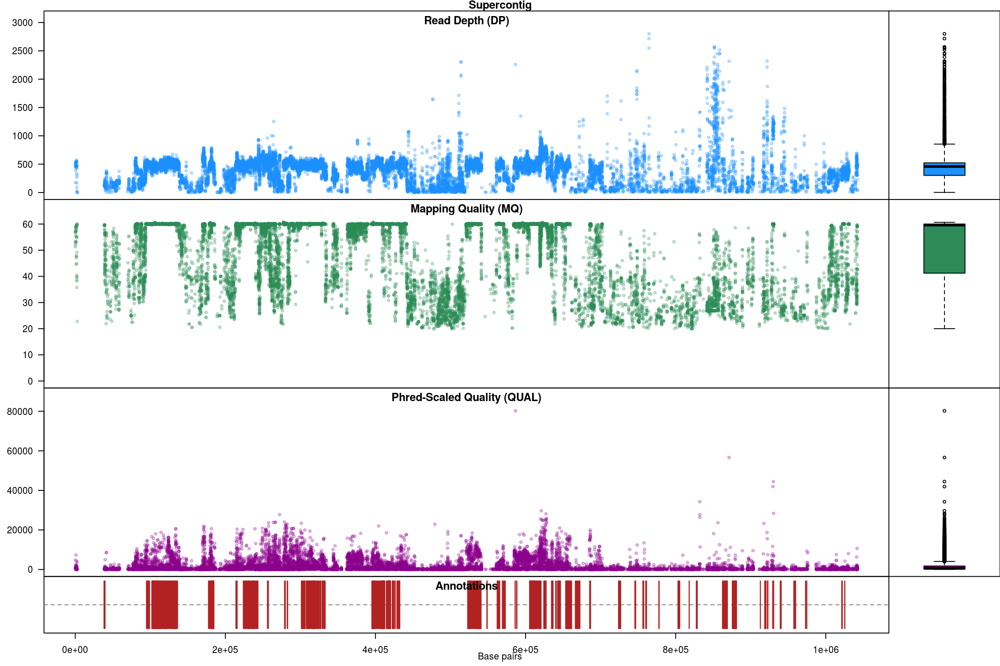
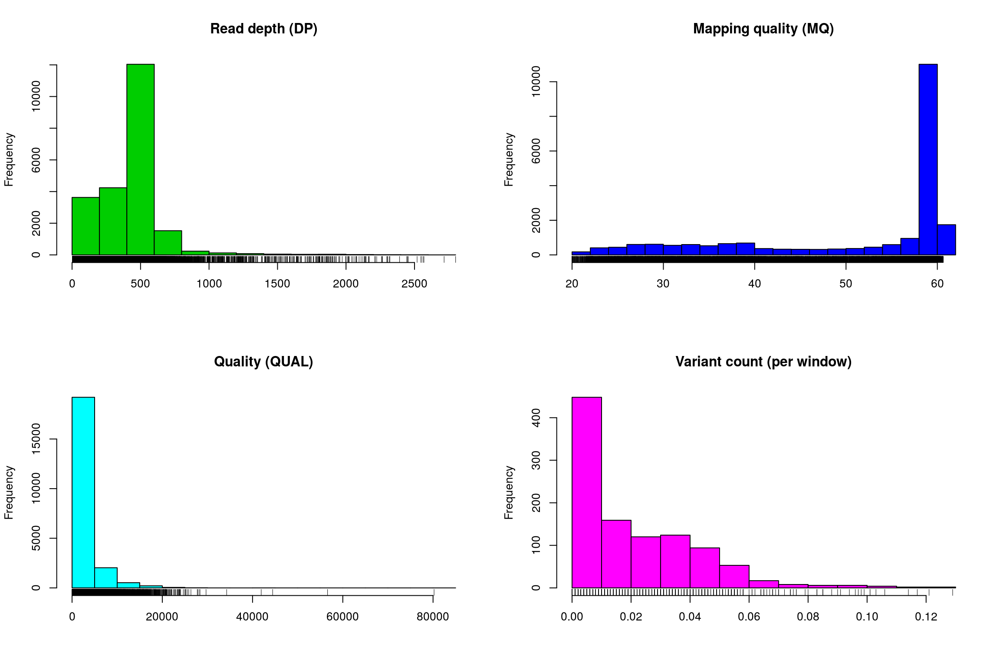
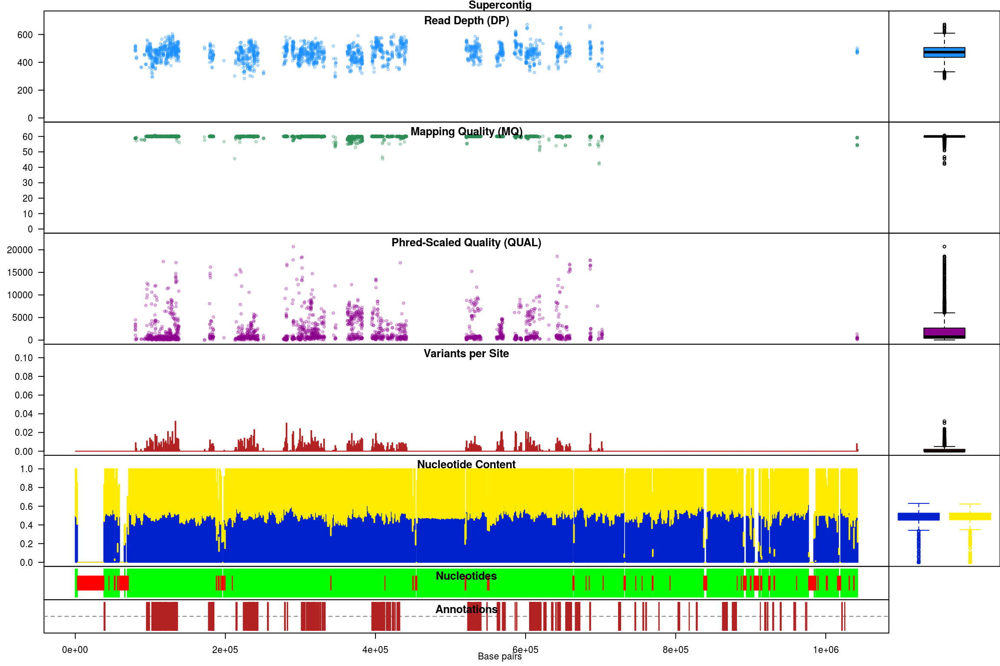
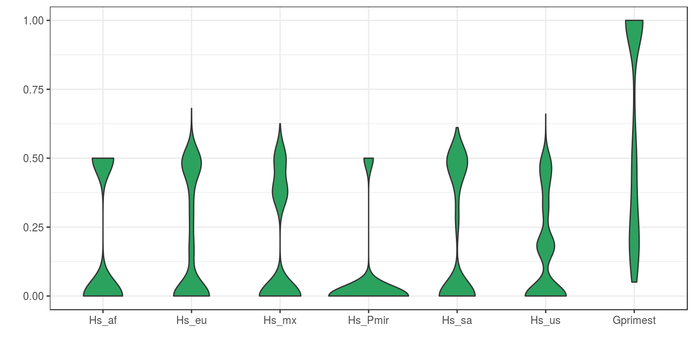

Analysis of genome data
BJ Knaus, JF Tabima, and NJ Grünwald
Introduction
Analysis of genome data for populations can be seen as similar to the analyses of other marker systems discussed in previous chapters of this book, except that genome data analyses include larger quantities of data. For example, VCF data (discussed in ‘reading VCF data’) can be read into R using vcfR (Knaus & Grünwald, 2017) to create a vcfR object. This object can be converted into a genlight object (Jombart, 2008) and then a snpclone object (Kamvar, Tabima & Grünwald, 2014, Kamvar, Brooks & Grünwald (2015)) if deemed necessary. Analysis on these objects has been covered in previous sections. Genome scale data provides additional analytical options as well. For example, when assumptions about the neutrality of the majority of the genome are appropriate, this can be used as a null hypothesis and used to help identify markers that differentiate from this assumption. Here we’ll provide examples of how genomic data may be analyzed.
For genomics examples we’ll use the pinfsc50 dataset. The pinfsc50 dataset is from a number of published P. infestans genomics projects where the data has been subset here to supercontig_1.50. This dataset is available as a stand alone R package (Knaus & Grünwald, 2017). By subsetting the data to one supercontig it creates a dataset of a size that can be conveniently used for examples. This dataset illustrates some important strengths and weaknesses of these studies. A strength is the amount of data we have for each individual. Among the weaknesses are that the samples are ‘opportunistic’ in that we have no control over the design of the experiment. Also, because of the large investment in data per sample, there is a relatively small number of samples.
Opening and examining the dataset
We’ll read our VCF data into R using the function read.vcfR(). This is data from the pinfsc50 data set that we filtered for quality in the section reading VCF data. Once the file is read in we can validate its contents using the show method which is implemented by executing the object’s name at the prompt.
library('vcfR')##
## ***** *** vcfR *** *****
## This is vcfR 1.5.0.9000
## browseVignettes('vcfR') # Documentation
## citation('vcfR') # Citation
## ***** ***** ***** *****vcf <- read.vcfR("pinfsc50_filtered.vcf.gz")vcf## ***** Object of Class vcfR *****
## 18 samples
## 1 CHROMs
## 2,190 variants
## Object size: 2.7 Mb
## 0 percent missing data
## ***** ***** *****The show method reports that we have 18 samples and 2,190 variants. If this matches our expectation then we can proceed.
Converting VCF data to a genlight object
Different R packages have created different data structures to hold your data when it is imported into R. This is analagous to the different file formats you may have used to analyze your data in software outside of R. We’ve tried to engineer a suite of functions to convert data structures among the various R packages we typically use. The R package adegenet is a popular R package used for population genetic analysis and it works on data structures called ‘genlight’ objects. Here we use the function vcfR2genlight() to convert our vcfR object to a genlight object. This makes our VCF data available to the analyses in adegenet.
x <- vcfR2genlight(vcf)## Warning in vcfR2genlight(vcf): Found 44 loci with more than two alleles.
## Objects of class genlight only support loci with two alleles.
## 44 loci will be omitted from the genlight object.## Loading required namespace: adegenet## Loading required package: parallelx## /// GENLIGHT OBJECT /////////
##
## // 18 genotypes, 2,146 binary SNPs, size: 222 Kb
## 0 (0 %) missing data
##
## // Basic content
## @gen: list of 18 SNPbin
##
## // Optional content
## @ind.names: 18 individual labels
## @loc.names: 2146 locus labels
## @chromosome: factor storing chromosomes of the SNPs
## @position: integer storing positions of the SNPs
## @other: a list containing: elements without namesA genlight object only supports biallelic, or binary, variants. That is, variants with no more than two alleles. However, variant call format data can include multiple alleles. When we created our genlight object we recieved a warning message indicating that our vcfR object had variants with more than two alleles and that it was being subset to only biallelic variants. This is one of several important differences in how data is handled in VCF data versus genlight objects.
Another important difference among VCF and genlight data is how the genotypes are stored. In VCF data the alleles are delimited by either a pipe or a forward slash (‘|’, ‘/’ respectively). Because genlight objects only use biallelic loci the genotypes can be recoded as 0, 1 and 2. These correspond to homozygous for the reference or zero allele, heterozygote or homozygous for the first alternate allele. We can validate this by checking a few select genotypes from both the vcfR object and the genlight object.
# vcfR
gt <- extract.gt(vcf, element = "GT")
gt[c(2,6,18), 1:3]## BL2009P4_us23 DDR7602 IN2009T1_us22
## Supercontig_1.50_80063 "1|0" "1|0" "0|1"
## Supercontig_1.50_80089 "0|0" "1|0" "0|1"
## Supercontig_1.50_94108 "0|1" "0|1" "1|1"# genlight
t(as.matrix(x))[c(1,5,17), 1:3]## BL2009P4_us23 DDR7602 IN2009T1_us22
## Supercontig_1.50_80063 1 1 1
## Supercontig_1.50_80089 0 1 1
## Supercontig_1.50_94108 1 1 2Note that in VCF data the samples are in columns and the variants are in rows. In genlight objects, and many other R objects, the samples are in rows while the variants are in columns. We can use the transpose function (t()) to convert between these two states.
Yet another difference among VCF data and genlight objects is that in VCF data there is no concept of ‘population.’ The package adegenet was designed specifically for the analysis of population data, so its genlight object has a place (a ‘slot’) to hold this information. Because there is no population data in VCF data, if we want population data we’ll have to set it ourselves.
library(adegenet)## Loading required package: methods## Loading required package: ade4##
## /// adegenet 2.0.1 is loaded ////////////
##
## > overview: '?adegenet'
## > tutorials/doc/questions: 'adegenetWeb()'
## > bug reports/feature requests: adegenetIssues()pop(x) <- as.factor(c("us", "eu", "us", "af", "eu", "us", "mx", "eu", "eu", "sa", "mx", "sa", "us", "sa", "Pmir", "us", "eu", "eu"))
popNames(x)## [1] "af" "eu" "mx" "Pmir" "sa" "us"Our population designation consists of a vector, that is the same length as the number of samples we have, where each element indicates which population each sample belongs to. By using the as.factor() function we transform the “vector” into a “factor”. A factor understands that all of the elements that are named “us” or “eu” are all part of the same group. This is why when we ask for the popNames we get a vector where each population is represented only once.
Yet another difference among VCF data and genlight objects is the concept of ploidy. In VCF data each variant is treated independently. This means that in theory VCF data may contain data that is of mixed ploidy. In a genlight object different samples may be of different ploidy levels, but within each sample all of its loci must be of the same ploidy level. Here we’ll set the ploidy of all the samples in the genlight object to the same ploidy.
ploidy(x) <- 2Distance matrices
Let’s create a pairwise genetic distance matrix for individuals or populations (i.e., groups of individuals).
Note: There isn’t actually a function that creates distance matrices from genlight objects in adegenet. Instead, the authors of adegenet created an
as.matrix()function that converts a genlight object to a matrix. This is clever because the functiondist()in the packagestatstries to convert whatever object it is given into a matrix. The result is that when you calldist()on a genlight object it uses thedist()function to create a distance matrix. The reason this is clever is because it uses pre-existing code. The downside is that because there is no function to specifically create distance matrices from genlight objects in adegenet, there is no documentation in genlight for how this is done. And because the author ofdist()never anticipated it could be used on genlight objects, there is no documentation for it there either.
To summarize, we can create a distance matrix from a genlight object using dist():
x.dist <- dist(x)Note, that we have not specified what the variable x is. We can find documentation for this function with ?dist.
There are also functions to create distance matrices from genlight objects that exist in other packages. The function bitwise.dist() in the package poppr is an example. We can find documentation for this function with ?poppr::bitwise.dist. Again, you need to know where to look for this information or you may not find it. We can use this function as follows.
x.dist <- poppr::bitwise.dist(x)Note, that the variable x has not yet been specified. Lastly, because you can use as.matrix() on your genlight object, and most distance algorithms can use this matrix as input, you can use this as an intermediate step to create a matrix from your genlight object and pass it to your distance algorithm of choice. Options include ade4, vegdist() in vegan, or daisy() in cluster. Note that it is up to you to determine which distance metric is best for your particular analysis. A number of options therefore exist for creating distance matrices from genlight objects.
chromR objects
Using chromR to locate unusual features in a genome
Genomic projects frequently incorporate several types of data. For example, the reference sequence may be stored as a FASTA format file, variants (SNPs, indels, etc.) may be stored in a variant call format (VCF) file while annotations may be stored as a GFF or BED format (tablular data). Genome browsers can be used to integrate these different data types. However, genome browsers typically lack a manipulation environment, they simply display existing files. The R environment includes a tremendous amount of statistical support that is both specific to genetics and genomics as well as more general tools (e.g., the linear model and its extensions). The R package vcfR provides a link between VCF data and the R environment and it includes a simple genome browser to help visualize the effect of manipulations. Here we explore how we can use vcfR to survey genomic data for interesting features.
Creating chromR objects
In this example we will begin by locating the example data from the pinfsc50 package. This is a separate package from vcfR that you will need to install. If you haven’t installed it already, you can install it with install.packages('pinfsc50'). For data from your own research activities you may wany to omit the system.file() steps and directly use your filenames in the input steps.
library(vcfR)
# Find the files.
vcf_file <- system.file("extdata", "pinf_sc50.vcf.gz", package = "pinfsc50")
dna_file <- system.file("extdata", "pinf_sc50.fasta", package = "pinfsc50")
gff_file <- system.file("extdata", "pinf_sc50.gff", package = "pinfsc50")
# Input the files.
vcf <- read.vcfR(vcf_file, verbose = FALSE)
dna <- ape::read.dna(dna_file, format = "fasta")
gff <- read.table(gff_file, sep="\t", quote="")
# Create a chromR object.
chrom <- create.chromR(name="Supercontig", vcf=vcf, seq=dna, ann=gff, verbose=TRUE)## Names in vcf:## Supercontig_1.50## Names of sequences:## Supercontig_1.50 of Phytophthora infestans T30-4## Warning in create.chromR(name = "Supercontig", vcf = vcf, seq = dna, ann = gff, :
## Names in variant data and sequence data do not match perfectly.
## If you choose to proceed, we'll do our best to match the data.
## But prepare yourself for unexpected results.## Names in annotation:## Supercontig_1.50## Initializing var.info slot.## var.info slot initialized.Note that a warning message indicates that the names in all of the data sources do not match pefectly. It has been my experience that this is a frequent occurrence in genome projects. Instead of asking the user to create duplicate files that have the same data but standardized names, vcfR allows the user to exercise some judgement. If you see this message and feel the names are correct you can ignore this and proceed. In this case we see that a chromosome is named ‘Supercontig_1.50’ in the VCF data but named ‘Supercontig_1.50 of Phytophthora infestans T30-4’ in the FASTA (sequence) file. Because we know that for this specific project these are synonyms we can safely ignore the warning and proceed.
Once we have created our chromR object we can verify that its contents are what we expect. By executing the object’s name at the console, with no other arguments, we invoke the object’s ‘show’ method. The show method for chromR objects presents a summary of the object’s contents.
chrom## ***** Class chromR, method Show *****
## Name: Supercontig
## Chromosome length: 1,042,442 bp
## Chromosome labels: Supercontig_1.50 of Phytophthora infestans T30-4
## Annotation (@ann) count: 223
## Annotation chromosome names: Supercontig_1.50
## Variant (@vcf) count: 22,031
## Variant (@vcf) chromosome names: Supercontig_1.50
## Object size: 22.5 Mb
## Use head(object) for more details.
## ***** End Show (chromR) *****There at least two ways to graphically view the chromR object. The first is plot() which plots histograms of some of data summaries.
plot(chrom)
The read depth here is a sum over all samples. We see a peak that represents the depth where most of our genomes were sequenced at. Low regions of sequence depth may indicate variants where we may be concerned that there may not be enough information to call a genotype. Variants of high coverage may represent repetetive regions of genomes where the reference may not contain all the copies so the reads pile up on the fraction of repeats that were successfully assembled. These regions may violate the ploidy assumptions made by variant callers and therefore may be considered a target for quality filtering. Mapping quality is very peaked at 60 but also contains variants that deviate from this common value. Quality (QUAL) is less easily interpreted. It appears that most of our variants are of a low quality with very few of them being of high quality. It is important to remember that while everyone would like high quality, quality is frequently difficult to measure. The simplest interpretation here is that QUAL may not be a good parameter to use to judge your variants. The last panel for SNP densities is empty because this data is created during the processing of chromR objects, which we will discuss below.
chromoqc(chrom, dp.alpha = 66)
Our second plot, called chromo plot, displays the same information as the plot method only it distributes the data along its chomosomal coordinates. It also includes a representation of the annotation data. The contents of this plot are somewhat flexible in that it depends on what data is present in the chromR object.
Processing chromR objects
Creation and processing of a chromR object has been divided into separate tasks. Creation loads the data into the chromR object and should typically only be required once. Processing the chromR object generates summaries of the data. Some of these summaries will need to be updated as the chromR object is updated. For example, if the size of the sliding window used to summarize variant density and GC content is changed the chromR object will need to be processed to update this information.
chrom <- proc.chromR(chrom, verbose = TRUE)## Nucleotide regions complete.## elapsed time: 0.645## N regions complete.## elapsed time: 0.247## Population summary complete.## elapsed time: 0.201## window_init complete.## elapsed time: 0.001## windowize_fasta complete.## elapsed time: 0.19## windowize_annotations complete.## elapsed time: 0.011## windowize_variants complete.## elapsed time: 0.001plot(chrom)
Subsequent to processing, our plot function is identical to its previous presentation except that we now have variant densities. When we observe the chromoqc plot we see that we now have variant densities, nucleotide content as well as a representation of where in our reference we have nucleotides (A, C, G or T) or where we have ambiguous nucleotides.
chromoqc(chrom, dp.alpha = 66)
The above data is an example of visualizing raw data that has come from a variant caller and other automated sources. In our section on quality control we presented methods on how to filter variants on various parameters as an attempt to omit low quality variants. We can use this data to create a chromR object and compare it to the above data.
#vcf <- read.vcfR("pinfsc50_qc.vcf.gz", verbose = FALSE)
vcf <- read.vcfR("pinfsc50_filtered.vcf.gz", verbose = FALSE)
chrom <- create.chromR(name="Supercontig", vcf=vcf, seq=dna, ann=gff, verbose=FALSE)
chrom <- proc.chromR(chrom, verbose = FALSE)
chromoqc(chrom, dp.alpha = 66)
We have a smaller quantity of data after our quality control steps. However, there do appear to be a few improvements. First, the read depth is now fairly uniform and lacks the large variation in depth we saw in the raw data. In genomics projects our naive assumption is that we would sequence all regions of the genome at the same depth. So this change in the data allows it to approach our expectation. Second, the mapping quality appear relatively constant and the variants with low mapping quality have been omitted. If we feel that ‘mapping quality’ is a reasonable assessment of quality, we may interpret this as an improvement. These are methods we feel improve the quality of our datasets prior to analysis.
Tabular summaries
When we process a chromR object, two forms of tabular data are created. First, summaries are made on a per variant basis. This includes sample size (minus missing data), allele counts, heterozygosity and effective size. Second, summaries are made on a per window basis. Window size can be changed with the win.size parameter of the function proc.chromR(). Window based summaries include nucleotide content per window (including missing data so you can adjust window size for analyses if necessary), the number of genic sites per window (when annotation information was provided) and the number of variants per window.
head(chrom@var.info)## CHROM POS MQ DP mask n Allele_counts He
## 1 Supercontig_1.50 80058 58.96 508 TRUE 18 25,10,1 0.64364712
## 2 Supercontig_1.50 80063 58.95 514 TRUE 18 25,11 0.42438272
## 3 Supercontig_1.50 80067 58.88 499 TRUE 18 23,13 0.46141975
## 4 Supercontig_1.50 80073 58.77 490 TRUE 18 35,1 0.05401235
## 5 Supercontig_1.50 80074 58.75 482 TRUE 18 26,10 0.40123457
## 6 Supercontig_1.50 80089 58.80 481 TRUE 18 25,11 0.42438272
## Ne
## 1 2.806207
## 2 1.737265
## 3 1.856734
## 4 1.057096
## 5 1.670103
## 6 1.737265head(chrom@win.info)## CHROM window start end length A C G T N other
## 1 Supercontig_1.50 1 1 1000 1000 267 213 293 227 0 0
## 2 Supercontig_1.50 2 1001 2000 1000 283 206 309 202 0 0
## 3 Supercontig_1.50 3 2001 3000 1000 229 213 235 177 146 0
## 4 Supercontig_1.50 4 3001 4000 1000 0 0 0 0 1000 0
## 5 Supercontig_1.50 5 4001 5000 1000 0 0 0 0 1000 0
## 6 Supercontig_1.50 6 5001 6000 1000 0 0 0 0 1000 0
## genic variants
## 1 0 0
## 2 0 0
## 3 0 0
## 4 0 0
## 5 0 0
## 6 0 0While loading entire genomes into memory may not be practical due to resource limitations, it is frequently practical to break a genome up into fractions that can be processed given the resources available on any system. By processing a genome by chromosomes, or some other fraction, and saving this tabular data to file you can perform genome scans in an attempt to identify interesting features.
Genetic differentiation
A fundamental question to most population studies is whether populations are diverse and whether this diversity is shared among the populations? To address the question of within population diversity geneticists typically report heterozygosity. This is the probability that two alleles randomly chosen from a population will be different (Nei, 1973). Ecologists may know this as Simpson’s Index (Simpson, 1949). To address differentiation population geneticists typically utilize \(F_{ST}\) or one of its analogues. Population differentiation measured by \(F_{ST}\) was originally proposed by Sewall Wright (Wright, 1949). This was later extended to a method based on diversity by Masatoshi Nei (Nei, 1973). As researchers applied these metrics to microsatellites, genetic markers with a large number of alleles, it became clear that Nei’s measure would not correctly range from zero to one, so Philip Hedrick proposed a correction (Hedrick, 2005). More recently, Lou Jost proposed another alternative (Jost, 2008). You can tell a topic is popular when so many variants of it are generated. And there are more variants than mentioned here. A nice discussion as to which measure may be appropriate for your data was posteed to teh Molecular Ecologist blog titled should I use \(F_{ST}\), \(G_{ST}\) or \(D\)?.
In vcfR, the function genetic_diff() was implemented to measure population diversity and differentiation. Because VCF data typically do not include population information we’ll have to supply it as a factor. The method ‘nei’ employed here is based on the methods reported by Hedrick (Hedrick, 2005). The exception is that the heterozygosities are weighted by the number of alleles observed in each population. This was inspired by hierfstat::pairwise.fst() which uses the number of individuals observed in each population to weight the heterozygosities. By using the number of alleles observed instead of the number of individuals we remove an assumption about how many alleles each individual may contribute. That is, we should be able to accomodate samples of mixed ploidy.
library(vcfR)
data(vcfR_example)
pop <- as.factor(c("us", "eu", "us", "af", "eu", "us", "mx", "eu", "eu", "sa", "mx", "sa", "us", "sa", "Pmir", "us", "eu", "eu"))
myDiff <- genetic_diff(vcf, pops = pop, method = 'nei')
knitr::kable(head(myDiff[,1:15]))| CHROM | POS | Hs_af | Hs_eu | Hs_mx | Hs_Pmir | Hs_sa | Hs_us | Ht | n_af | n_eu | n_mx | n_Pmir | n_sa | n_us |
|---|---|---|---|---|---|---|---|---|---|---|---|---|---|---|
| Supercontig_1.50 | 2 | 0 | 0.0 | 0.000 | 0.5 | 0.000 | 0.00 | 0.0798611 | 2 | 4 | 4 | 2 | 4 | 8 |
| Supercontig_1.50 | 246 | NaN | 0.0 | 0.375 | NaN | 0.000 | 0.50 | 0.3512397 | 0 | 4 | 4 | 0 | 6 | 8 |
| Supercontig_1.50 | 549 | NaN | 0.0 | NaN | NaN | NaN | 0.50 | 0.4444444 | 0 | 2 | 0 | 0 | 0 | 4 |
| Supercontig_1.50 | 668 | NaN | 0.5 | 0.000 | NaN | 0.000 | 0.50 | 0.5000000 | 0 | 4 | 2 | 0 | 2 | 8 |
| Supercontig_1.50 | 765 | 0 | 0.0 | 0.000 | 0.0 | 0.000 | 0.00 | 0.1107266 | 2 | 12 | 4 | 2 | 4 | 10 |
| Supercontig_1.50 | 780 | 0 | 0.0 | 0.000 | 0.0 | 0.375 | 0.18 | 0.1244444 | 2 | 8 | 4 | 2 | 4 | 10 |
The function returns the chromosome and position of each variant as provided in the VCF data. This should allow you to align its output with the VCF data. The heterozygosities for each population are reported as well as the total heterozygosity, followed by the number of alleles observed in each population. Note that in some populations zero alleles were observed. Populations with zero alleles reported heterozygosities of ‘NaN’ because of this absence of data.
knitr::kable(head(myDiff[,16:19]))| Gst | Htmax | Gstmax | Gprimest |
|---|---|---|---|
| 0.4782609 | 0.7951389 | 0.9475983 | 0.5047085 |
| NaN | 0.8057851 | NaN | NaN |
| NaN | 0.6666667 | NaN | NaN |
| NaN | 0.8125000 | NaN | NaN |
| 1.0000000 | 0.7543253 | 1.0000000 | 1.0000000 |
| 0.1160714 | 0.8000000 | 0.8625000 | 0.1345756 |
The remaining columns contain \(G_{ST}\), the maximum heterozygosity, the maximum \(G_{ST}\) and finally \(G'_{ST}\). The maximum heterozygosity and the maximum \(G_{ST}\) are intermediary values used to calculate \(G'_{ST}\). They are typically not reported but provide values to help validate that \(G'_{ST}\) was calculated correctly. Note that the populations that had zero alleles, and therefore a heterozygosity of ‘NaN’, contributed to \(G_{ST}\)s that were also ‘NaN’. To avoid this you may want to consider omitting populations with a small sample size or that contain a large amount of missing data.
We now have information for each variant in the VCF data. Because this is typically a large quantity of information, we’ll want to summarize it. One way is to take averages of the data.
knitr::kable(round(colMeans(myDiff[,c(3:9,16,19)], na.rm = TRUE), digits = 3))| Hs_af | 0.176 |
| Hs_eu | 0.188 |
| Hs_mx | 0.168 |
| Hs_Pmir | 0.052 |
| Hs_sa | 0.198 |
| Hs_us | 0.155 |
| Ht | 0.247 |
| Gst | 0.595 |
| Gprimest | 0.632 |
Another way to summarize data is to use violin plots.
library(reshape2)
library(ggplot2)
dpf <- melt(myDiff[,c(3:8,19)], varnames=c('Index', 'Sample'), value.name = 'Depth', na.rm=TRUE)## No id variables; using all as measure variablesp <- ggplot(dpf, aes(x=variable, y=Depth)) + geom_violin(fill="#2ca25f", adjust = 1.2)
p <- p + xlab("")
p <- p + ylab("")
p <- p + theme_bw()
p
References
Hedrick PW. 2005. A standardized genetic differentiation measure. Evolution 59:1633–1638. Available at: http://dx.doi.org/10.1111/j.0014-3820.2005.tb01814.x
Jombart T. 2008. \(adegenet\): A R package for the multivariate analysis of genetic markers. Bioinformatics 24:1403–1405. Available at: https://doi.org/10.1093/bioinformatics/btn129
Jost L. 2008. \(G_{ST}\) And its relatives do not measure differentiation. Molecular Ecology 17:4015–4026. Available at: http://dx.doi.org/10.1111/j.1365-294X.2008.03887.x
Kamvar ZN., Brooks JC., Grünwald NJ. 2015. Novel R tools for analysis of genome-wide population genetic data with emphasis on clonality. Name: Frontiers in Genetics 6:208. Available at: http://dx.doi.org/10.3389/fgene.2015.00208
Kamvar ZN., Tabima JF., Grünwald NJ. 2014. \(Poppr\): An R package for genetic analysis of populations with clonal, partially clonal, and/or sexual reproduction. PeerJ 2:e281. Available at: http://dx.doi.org/10.7717/peerj.281
Knaus BJ., Grünwald NJ. 2017. \({V}cfr\): A package to manipulate and visualize variant call format data in R. Molecular Ecology Resources 17:44–53. Available at: http://dx.doi.org/10.1111/1755-0998.12549
Nei M. 1973. Analysis of gene diversity in subdivided populations. Proceedings of the National Academy of Sciences 70:3321–3323. Available at: http://www.pnas.org/content/70/12/3321.abstract
Simpson EH. 1949. Measurement of diversity. Nature 163:688. Available at: http://dx.doi.org/10.1038/163688a0
Wright S. 1949. The genetical structure of populations. Annals of Eugenics 15:323–354. Available at: http://dx.doi.org/10.1111/j.1469-1809.1949.tb02451.x